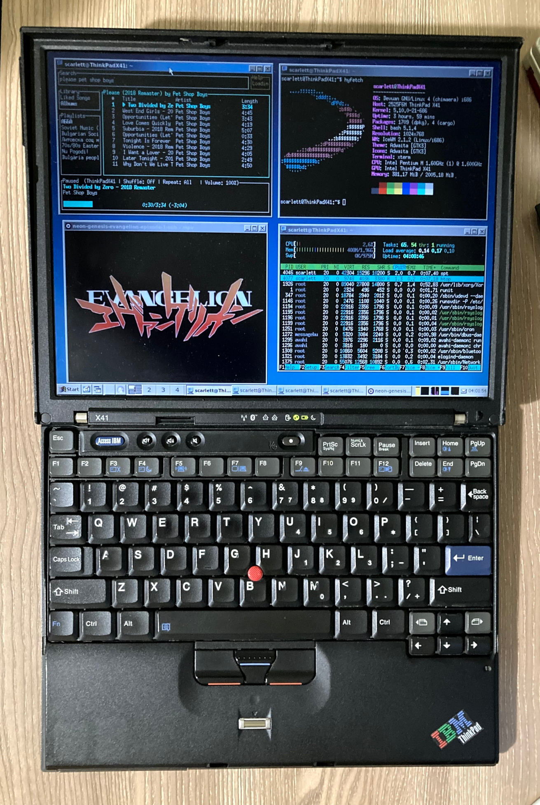

|  | CPU: Intel Pentium M 1.6 GHzMemory: 2 GBStorage: 32 GB 1.8" IDE SSDGPU: Intel Graphics Media Accelerator GMA 900 - 128 MB VRAMKeyboard Layout: USCondition: Working perfectly |
I got this machine for 15$ shortly after the X41. It was listed as "untested" because the seller didn't have a charger but also said that while the battery had a charge, it was showing some sort of an error on boot. Turns out it was just the clock battery being dead and the time not being correct. Just setting the time in the BIOS fixed everything and it booted straight into Windows XP. It also came with its dock station. I wiped the HDD and installed Void Linux which was a bit of a challenge due to broken install media, it seems.
The original 60 GB drive has died and I put the 32 GB SSD from my X41T and installed Linux Mint 19.3 and also upgraded the RAM to 2.5 GB. It runs quite nicely now.